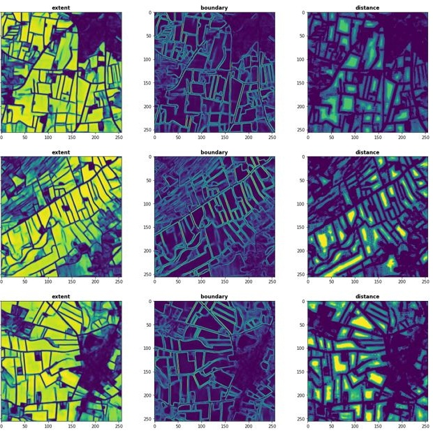
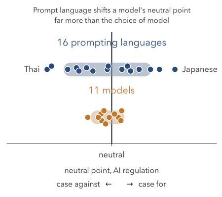
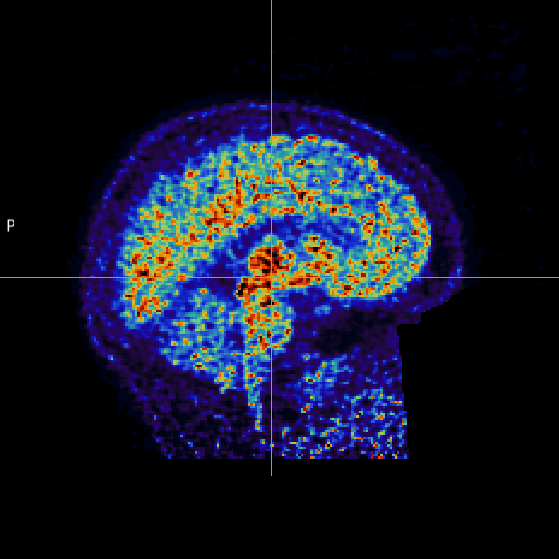
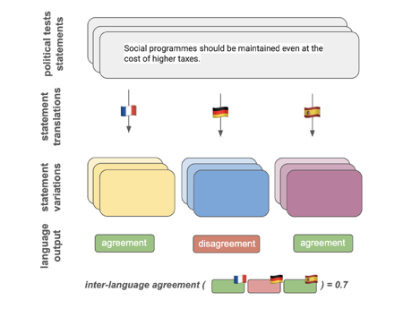

|
Avneet Kaur
avneetreen[dot]github[dot]io
Hi, I'm Avneet. Based in Copenhagen, I'm a Lead AI Engineer, working on building agentic AI systems for enterprise platforms. I hold a Master's degree in Computer Science from the University of Copenhagen, specializing in Machine Learning and Data Sciences. My research and professional interests are in Agentic AI, AI Safety, developing robust frameworks for secure AI deployment, exploring LLM architectures and responsible deployment, and building intelligent language systems with emphasis on safety and alignment.
Email • Linkedin • Google Scholar • Github |

|
Selected Research & Projects
|
 |
Field Boundary Delineation applied to Danish agriculture
University of Copenhagen, Department of Computer Science, DHI Avneet Kaur, in collaboration with, Stefan Oehmcke, Kenneth Grogan
Farmers and agricultural service providers need digital records of field boundaries, but delineating them is still largely manual, slow and hard to keep up to date over large areas. In collaboration with DHI, we automated this with deep learning on freely available Sentinel-2 satellite imagery of Danish farmland.
I built the full pipeline end to end: extracting multi-spectral Sentinel-2 tiles across Denmark, generating monthly median composites, deriving field extents, boundaries and distance transforms as labels, and producing a training set of about 48,000 image crops. I trained a ResUNet to jointly predict, for every pixel, the probability of belonging to a field, the probability of lying on a boundary, and the distance to the nearest boundary, and then used threshold-based post-processing to turn these outputs into closed, individual field parcels. Preliminary results reached about 80% accuracy on held-out test regions.
|
|
 |
Clash of Languages: A Model's Neutral Point Moves with the Prompting Language
Under review at ACL Rolling Review (ARR), August 2026 Alfonso Amayuelas, Efstathios Siatras, Nikolas Belle, Dakota Barnes, Antonina Sinelnik, Ashay Srivastava, Drishti Sharma, Avneet Kaur, William Yang Wang
We study how the prompting language shifts the political "neutral point" of large language models. Evaluating 11 LLMs from 5 countries across 16 languages and 14 socio-political topics (~74,000 generated passages), we locate each model's neutral point with linear probes trained on its own pro and con embeddings. A variance decomposition shows the prompting language explains roughly 5× more systematic variance than the choice of model, and the effect transfers across models: a held-out model's language-by-topic pattern can be predicted from the others (mean Pearson r = 0.61). A separate even-handedness analysis finds asymmetries concentrated on gender, immigration and climate change, consistent across all models.
|
|
 |
Development of a robust and reproducible preprocessing pipeline for Positron Emission Tomography (PET) data
M.Sc. Thesis, University of Copenhagen, Department of Computer Science Avneet Kaur, under the supervision of, Melanie Ganz-Benjaminsen, Martin Nørgaard, Vincent Beliveau
Differences in how Positron Emission Tomography (PET) brain scans are preprocessed can lead studies to different conclusions, which hurts the reproducibility of neuroimaging research. For my thesis, I developed an open, automated and configurable preprocessing pipeline for PET data, built with Nipype on top of established neuroimaging tools (FreeSurfer, PETSurfer, FSL) and BIDS-formatted data.
The pipeline covers the standard preprocessing steps of motion correction, co-registration to anatomical MRI, delineation of volumes of interest, partial volume correction and pharmacokinetic modelling. To evaluate robustness and computational reproducibility, I tested it on three datasets from different scanners and radiotracers, across different computational environments. The code is part of the open-source OpenNeuroPET project.
|
|
|
Code Based Synthetic Data Pipeline for Multimodal data
Expedition AYA 2025, Cohere Labs Avneet Kaur, Dante Lok, Reuben Chagas Fernandes
Vision Language Models (VLMs) struggle with charts and plots, partly because existing multimodal datasets contain little structured chart data. We built a pipeline that generates such data synthetically, at scale and low cost, to train, enhance and evaluate VLMs.
Starting from tabular (CSV) data, an LLM writes plotting code that is executed to render diverse charts (bar, line, scatter, pie, area and histogram). A second LLM stage generates question-answer pairs and chart tasks covering numerical understanding, chart summarization, anomaly detection, data correlation, forecasting and chain-of-thought reasoning. We then evaluate VLMs on these tasks using ground-truth checks for numerical answers, VLM-as-a-judge for descriptions, and human evaluation for factuality, coverage and diversity. We also built an interactive Next.js web app on the Cohere API for generating charts and Q&A pairs.
|
|
 |
Language-Based Opinion Shifts: Exploring the Language Effect in Multilingual Language Models Regarding Political Opinions
Expedition AYA 2024, Cohere Labs
We developed a multilingual framework to measure political bias in large language models (LLMs) and to uncover how the language of a prompt changes the political opinions a model expresses. We benchmarked six multilingual LLMs across 23 languages (covering roughly half of the world's population), introduced a metric that quantifies language-specific sensitivity to political bias, and investigated the effect of language-sensitive models on downstream tasks such as harmful text generation.
|
|
|
Multilingual Climate Change chatbot
Expedition AYA, Cohere Labs
Built with Climate Resilient Communities, this chatbot aims to make climate research and education accessible to all Torontonians, regardless of their cultural or linguistic background. Existing climate information is often fragmented, full of jargon, and excludes non-English speakers and marginalized communities.
I contributed to the development of the system, a multilingual retrieval-augmented generation (RAG) application. It answers questions about local climate risks, adaptation strategies and best practices by grounding responses in curated climate documents, uses Cohere's Aya models for translation across languages, and wraps generation in safety layers: input guardrails against harmful or off-topic queries, PII redaction, relevance checks on retrieved context, and output checks for factual accuracy.
|